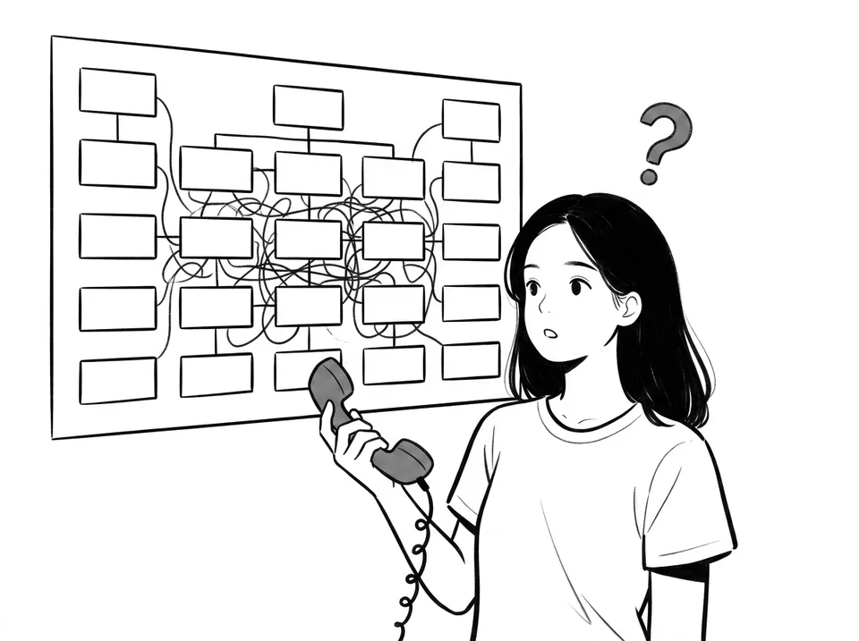
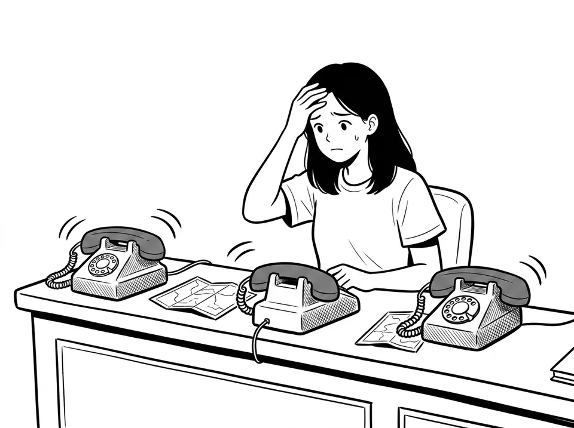

Web・LINE・店頭で使っているナレッジが、そのまま電話に。
着信の一次対応から、意図判断による取次まで自動化。
対応範囲は運用データで拡大でき、いつでも戻せる可逆設計です。
商業施設の代表電話から、サポート窓口、ホテルのフロントまで。
電話対応の現場に共通する、3つの構造的な悩み。

代表電話にかかってくる用件は多種多様。内容を聞き取り、該当部署や店舗を判断して転送する作業に、スタッフの時間が奪われ続けています。
FAQで解決できるはずの用件に応対時間が割かれ、本来注力すべき複雑な問い合わせへの対応品質に影響が出ています。

フロントの電話の多くは料金・チェックイン時間・館内案内などの定型の問い合わせ。人手に頼ると24時間対応は難しく、混雑時は取りこぼしと折返し対応の負担が重なります。
AI電話受付・取次の導入で見込める、代表的な効果です。
70〜90%
定型問い合わせをAIが自動処理
営業時間・料金・アクセスなどの定型的な用件は、AIがその場で回答します。
50〜70%
電話対応の人員配置を削減
一次対応と取次をAIに任せることで、スタッフは本来の業務に集中できます。
24時間365日
夜間・繁忙期も取りこぼさない
営業時間外の着信もAIが受付。機会損失と折返し対応の負担を減らします。
※ 数値は想定される導入効果の目安です。業種・コール内容・運用条件により異なります。
AI電話受付・取次で提供する主な機能です。
「この電話にいくらかかったか」を通話1件ごとに自動計算し、管理画面に表示。月額のブラックボックスではなく、費用対効果を数字で確認しながら運用可能。
オペレーターの通話をAIが画面上で支援。会話をリアルタイムに文字起こしし、ナレッジから回答候補を提示。通話後の要約まで自動化。完全自動応答と有人対応を、同じ基盤で使い分け。
AIがどこまで直接回答するかを、スライダー1本で調整。まずは取次だけに徹し、運用データを見ながら段階的に拡大。いつでも保守側へ戻せて、ベンダーへの依頼は不要。
着信をAIが受け、自然な音声で即応対。24時間365日の一次受付。
チャットボットと共通のナレッジベースから回答を組み立て。
10言語以上の音声対話。外国語の着信もAIがそのまま一次対応。
10種類以上の商用音声からBot単位で選択。ブランドに合う声で応対。
カレンダー連携による予約確認に対応。
用件を聞き取り、最適な担当・部署の直通番号へ自動転送。
自然な文章とキーワードで登録。優先順位の上から判定。
「担当におつなぎします」を転送前に自動で読み上げ。
転送先が応答できない場合は、設定した固定メッセージで自動案内。
クレーム・決済・本人確認などは、確信度に関わらず必ず人へ。
通話録音の同意取得ガイダンスを標準装備。公共・医療の現場にも対応。
用件の傾向を可視化。ナレッジ改善と対応範囲判断の材料に。
ボイスボット・IVRとの比較でよく確認されるポイントを、方式別にまとめました。
| 番号プッシュ式IVR | 一般的なボイスボット | GBase AI電話受付・取次 | |
|---|---|---|---|
| 用件の伝え方 | 番号を押して選択 | 話す（用意されたシナリオの範囲内） | 話すだけ。AIが意図を判断 |
| 設定の手間 | 分岐ツリーを人が設計 | 対話シナリオの設計・開発が必要 | 自然な文章でルールを書くだけ |
| ナレッジ | なし | 電話専用に別途構築 | チャットボットと共通の1つのナレッジ |
| AIに任せる範囲 | 広げられない | 調整はベンダー依存になりがち | スライダーで段階的に拡大。いつでも戻せる |
| 始め方 | 分岐設計の完成後に公開 | 要件定義・対話設計を経て導入 | 取次専用モードで小さく開始 |
| 費用の見え方 | 回線・保守費が中心 | 個別見積もりが中心。AI処理のコストは見えにくい | 通話1件単位でAIコストを自動計算・可視化 |
| 多言語対応 | 言語別のガイダンス録音が必要 | 日本語中心の設計が多い | 10言語以上の音声対話に対応 |
| 有人対応との連携 | 転送のみ | 自動応答と有人対応は別運用になりがち | AIコパイロットが有人通話も画面上で支援 |
ホテル受付を例にしたデモ回線です │ 24時間受付・通話料はお客様のご負担となります
※ 商業施設の代表電話・コールセンターでも、同じ仕組みで受付から取次まで自動化できます。「担当の方と…」とお話しいただくと、AIが用件を判断して取り次ぐ流れもご確認いただけます。
取次専用モードなら、シナリオ開発なしで運用を始められます。
広げるのは、データが貯まってからで構いません。
STEP 1
電話の用件傾向を伺い、「どんな用件を、誰につなぐか」の取次ルールを一緒に設計します。自然な文章で登録するだけです。
STEP 2
取次先の直通番号と転送を設定し、AIが受付と取次に徹する「取次優先」モードで稼働開始。AIが誤答するリスクのない状態から始まります。
STEP 3
通話データとナレッジの整備状況を見ながら、確信度の高い用件からAIの直接回答を解禁。スライダーはいつでも保守側へ戻せます。
※ 広げるペースは、用件の傾向・ナレッジの整備状況に合わせて設計します。取次専用のまま運用を続けることも可能です。
応答範囲・安全設計・設定方法について、よくいただくご質問にお答えします。
応答スタイルは「取次優先」「バランス」「自己解決優先」の3段階から選べます。最初はAIが受付と取次に徹する「取次優先」で安全に開始し、運用データが蓄積されるにつれて、AIが直接回答する範囲を段階的に広げられます。設定はいつでも保守側へ戻せる可逆設計です。
クレーム・決済/課金・本人確認・予約や契約の確定・法的事項は、AIの確信度に関わらず必ずスタッフへ取次する設計です。AIが重要な判断を勝手に行うことは構造的にありません。
「どんな用件のとき、どの担当につなぐか」を自然な文章とキーワードで登録するだけです。取次先は複数登録でき、優先順位の上から順に判定されます。どれにも当てはまらない場合の既定の取次先も設定できます。
応答がない場合は、あらかじめ設定した固定メッセージを自動で案内し、取りこぼしを防ぎます。転送前には「担当におつなぎします」のアナウンスも自動で読み上げます。
はい。GBase Supportのナレッジベースをそのまま電話の応答に活用します。FAQや資料を一度登録すれば、Web・LINE・店頭端末・電話のすべての接点で共通利用でき、電話の通話データもナレッジの改善に活かせます。
料金はご利用規模・用途に応じてご案内します。特長として、通話ごとのAIコストが管理画面で1件単位に自動計算・可視化されるため、導入後は「この電話にいくらかかったか」を確認しながら費用対効果を判断できます。詳細はお問い合わせください。
はい。リアルタイム音声対話は10言語以上に対応しており、訪日のお客様や外国人のお客様からの着信もAIがそのまま一次対応します。言語別のガイダンスを別途録音する必要はありません。
はい。AIコパイロットモードでは、オペレーターの通話をAIがリアルタイムに文字起こしし、回答候補の提示や通話後の要約生成を行います。完全自動応答とAI支援付きの有人対応を、同じ基盤で使い分けられます。
まずAIが受付と取次に徹する段階から運用を開始し、通話データを蓄積しながら、AIが直接回答する範囲を段階的に広げていくのが標準的な進め方です。スケジュールや費用の詳細はお問い合わせください。
まずはAIが受付と取次に徹する段階から。
貴社の電話対応の課題に合わせた進め方を、ご提案します。